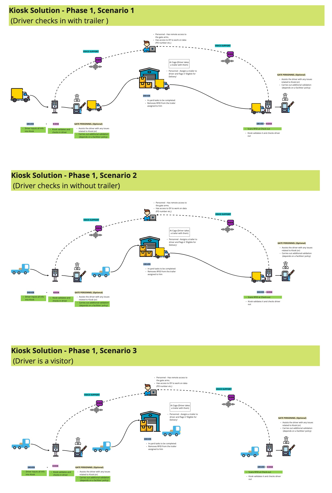
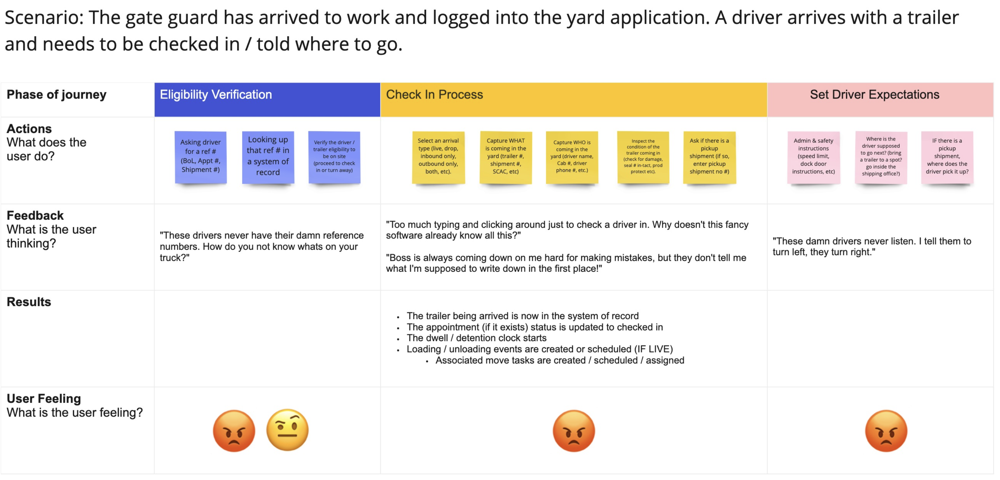
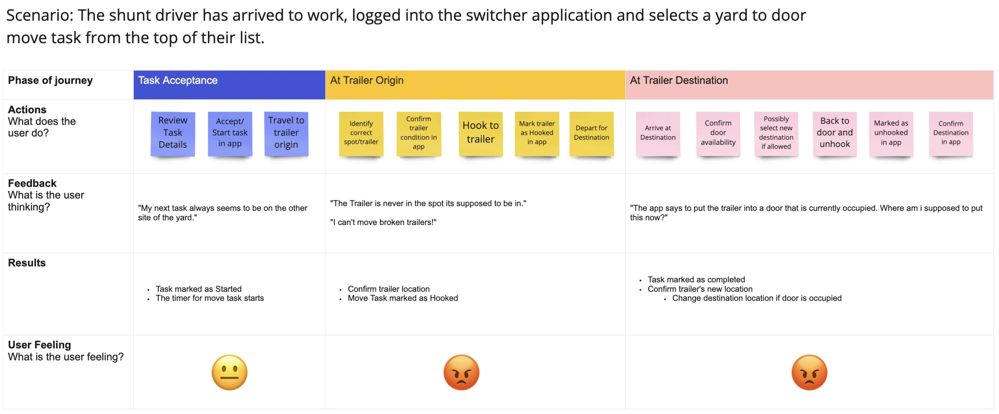
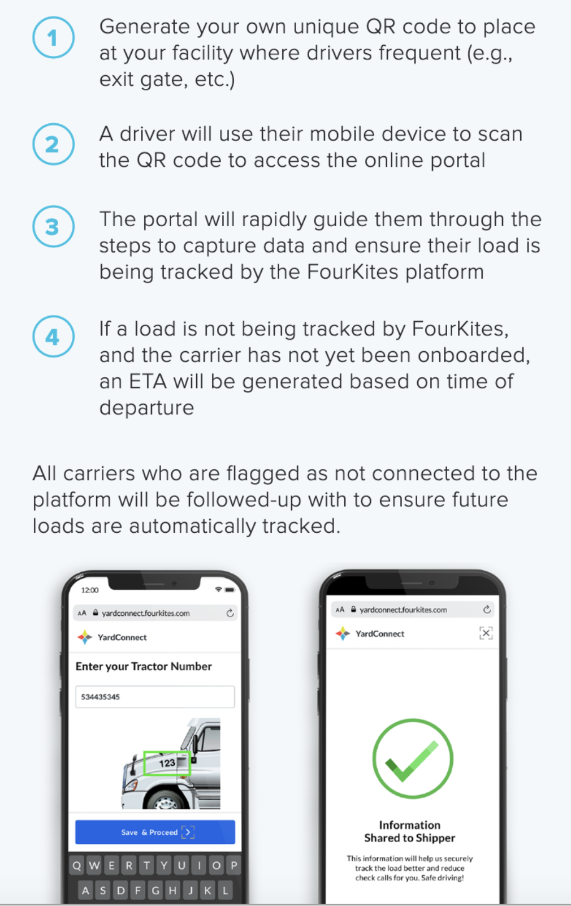
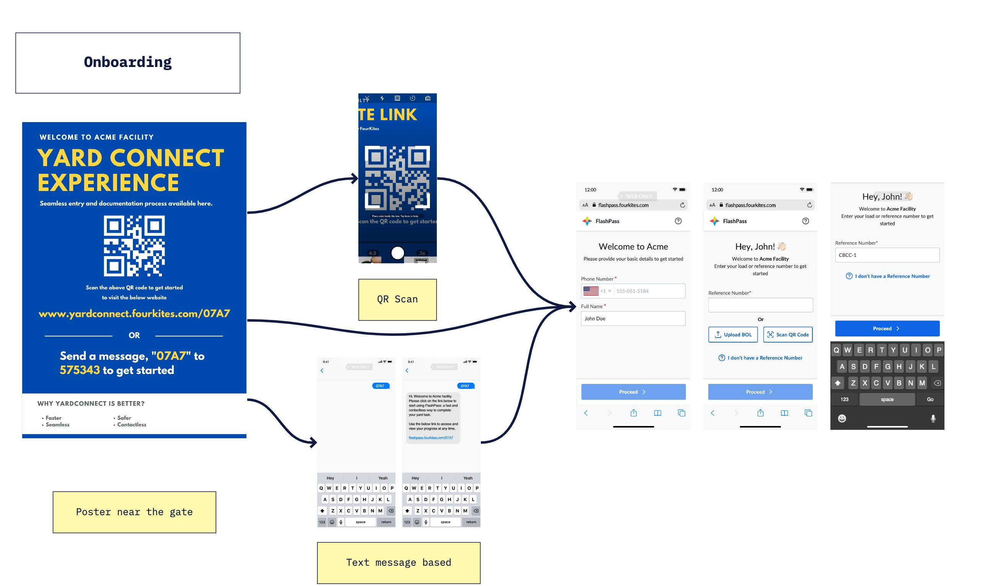
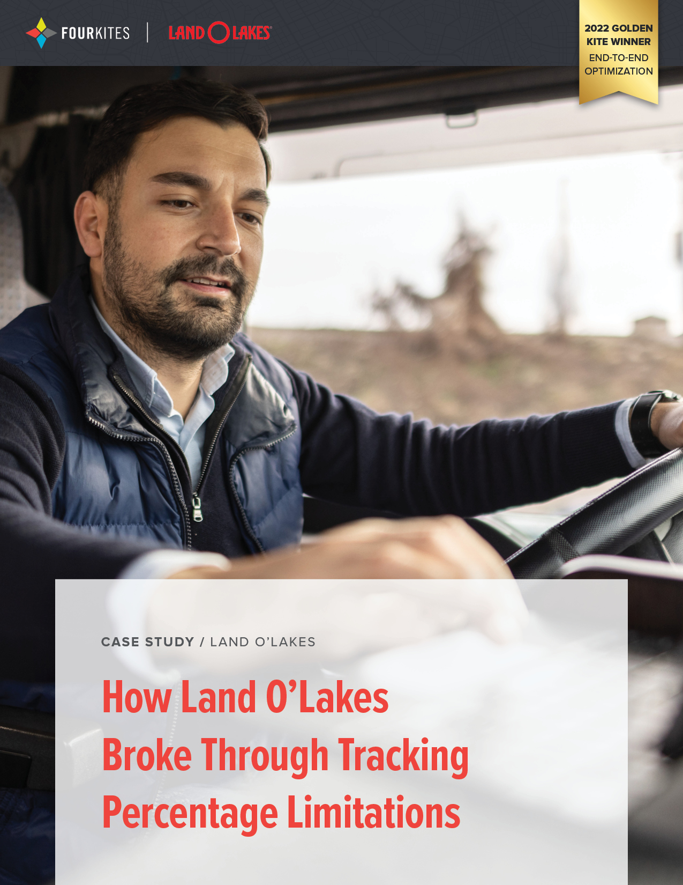
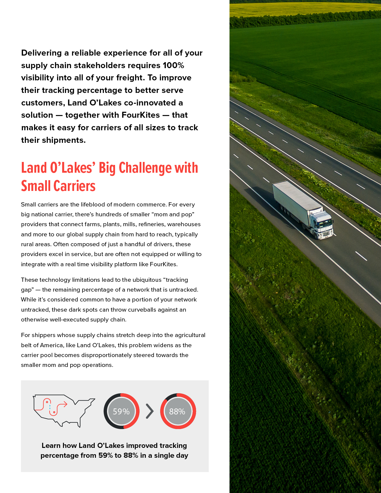
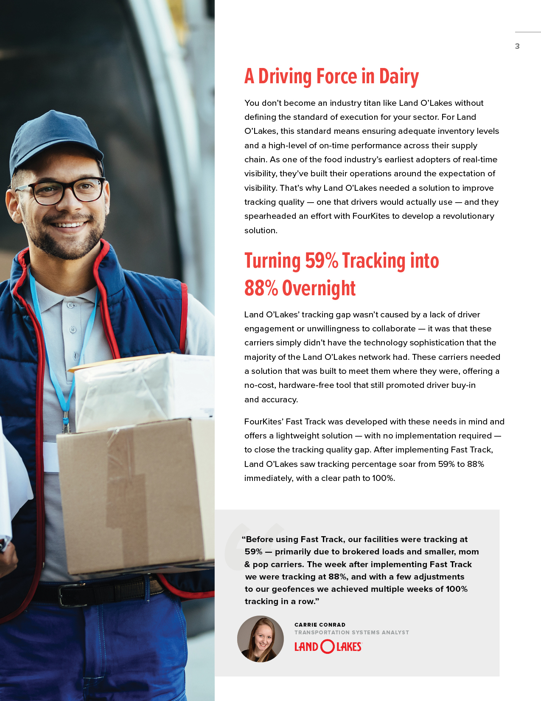
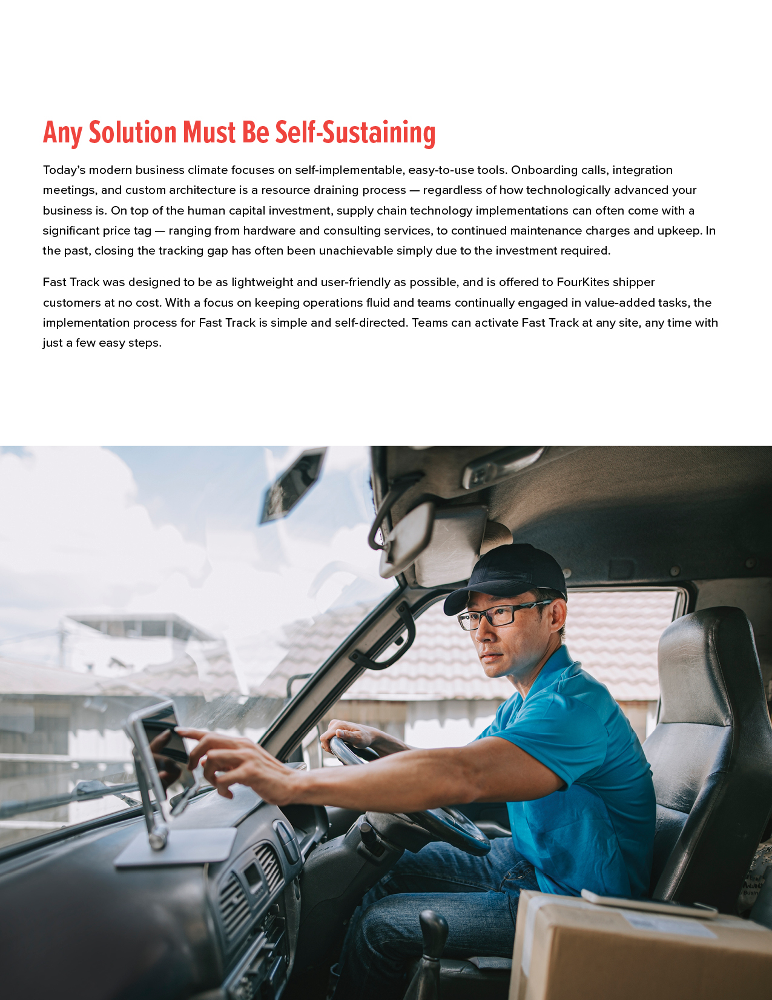
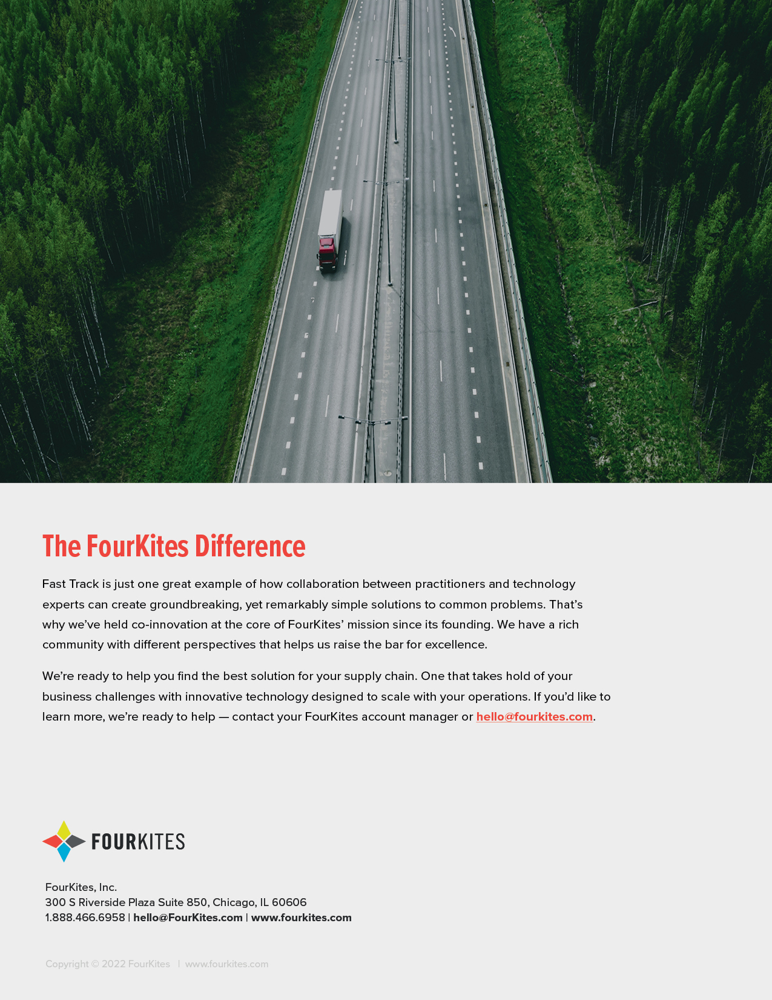

Fast Track: Bridging the Tracking Gap
A QR-based, contactless check-in flow that closed the visibility gap for loads with no GPS or ELD data.
Research · Product Design · 4 minute read
Problem statement
FourKites' primary objective is to deliver 100% end-to-end supply chain visibility to all of our customers in order to increase their agility, efficiency, and sustainability. Frequently, many of our customers contact us with the complaint that their "Load not tracking." This is primarily because their carrier did not provide the asset information, GPS, or ELD data with FourKites. This made it difficult for us to track these loads and posed a substantial risk to our consumers.
Overview
FourKites® Fast Track is a simple solution to fill in the tracking gap for loads without an asset assigned. This can also be enabled to capture more details on the carriers hauling your loads. Fast Track will help eliminate manual paper-based check-in processes and move your operations towards the goal of 100% tracking.
Fast Track enables facility users to go completely contactless while gathering relevant details from the drivers.
Opportunity canvas

User journey

Persona mapping
Gate Guard

Shunt Driver

Implementation challenges
We initially ideated a solution for yard management gates using kiosks. The idea was that when a driver entered the gate, they could check-in through a kiosk device placed at the gate. However, during the ideation phase, our user research revealed significant challenges with this approach.
Our research involved direct interviews and observations with drivers and yard managers. We discovered several critical insights:
- Cost concerns: Many yards operate on tight budgets and could not justify the investment in kiosks.
- Technology barriers: A significant portion of drivers were not familiar with or comfortable using kiosk technology.
- Operational feedback: Yard managers preferred solutions that did not require extensive new infrastructure.
Solution: mobile QR code check-in
Based on these insights, we pivoted to a more feasible solution: a QR code-based approach. This alternative allows drivers to check-in using their mobile phones, which addresses the key issues identified.
- Reduced cost: QR codes eliminate the need for expensive kiosks.
- Increased accessibility: Most drivers carry smartphones, eliminating the barrier of technology awareness.
- Simplicity: Scanning a QR code aligns with existing mobile phone behavior, making check-in intuitive and efficient.
What is Fast Track?
A simple web based tool interface for drivers that:
- Starts when the driver scans a QR code
- Allows the driver to share carrier and asset information
- Captures check out (picked up event) and Hours Of Service break details from the driver
📍 On-site information capture
💻 No facility hardware required
📱 Self-service via mobile device
🌐 Ability to self-implement

What can Fast Track do?
- Capture asset assignment details at Pick-up
- Generate ETA's and Pick-up status for every load utilizing Fast Track
- Initiate tracking on loads owned by Carriers with existing GPS integrations
- Push out of network Carriers to FourKites Connect
How does it work?

Prototyping

Important links
Field Research & User Testing
Watch the user testing video A driver walks through the Fast Track check-in flow, on-site PhotosCase study with Land O'Lakes
Land O'Lakes was one of the first customers to put Fast Track into production, giving us a real-world read on adoption and impact beyond the lab.





Evolving into Gate Automation
Fast Track proved the core thesis in production: drivers will self-serve check-in from their own phones if the flow is fast enough, and facilities don't need new hardware to get there. That thesis became the foundation for Gate Automation, a fuller solution that layers Visual AI truck recognition, automated dock and yard instructions, and exit validation on top of the same contactless, self-service principles. It cut check-in time to under 2 minutes and manual gate labor by over 90%.
Read the Gate Automation case study →